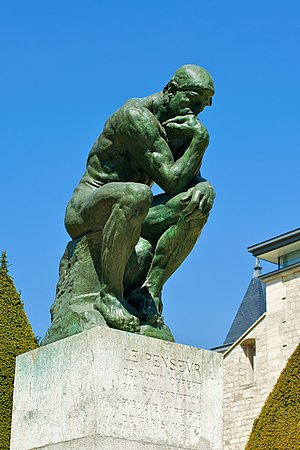

Paris, the capital of France, located in northern central France is the heart of culture, art and haute couture.
The city is spread widely on both banks of the famous river Seine.
Since the 17th century, Paris has been one of Europe's major centres of finance, diplomacy, commerce, fashion, gastronomy, science, and arts.
Paris is especially known for its museums and architectural landmarks.The Louvre remained the most visited museum in 2020, the year of the pandemic.
Paris is a city enriched with culture and exquisite art.
HISTORY
The history of Paris dates back to approximately 259 BC, with the Parisii, a Celtic tribe settled on the banks of the Seine. In 52 BC, the fishermen village was conquered
by the Romans, founding a Gallo-Roman town called Lutetia.The city changed its name to Paris during the fourth century. During this period, the city was threatened by Attila
the Hun and his army, and according to the legend, the inhabitants of Paris resisted the attacks thanks to the providential intervention of Saint Geneviève (patron saint of the city).
In 508 AD the first king of the Franks, Clovis I, made Paris the capital of his empire. In 987, the Capetian dynasty came to power until 1328.
During the eleventh century, Paris gradually became more prosper thanks to its trade in silver and because it was a strategic route for pilgrims and traders.
From the twelfth century on, Paris suffered important changes with the reconstruction of different neighborhoods, many damaged during World War I and World War II.
CLIMATE
Paris has a typical Western European oceanic climate , which is affected by the North Atlantic Current. The overall climate throughout the year is mild and moderately wet. Summer days are usually warm and pleasant with average temperatures between 15 and 25 °C, and a fair amount of sunshine.Spring and autumn have, on average,
mild days and fresh nights but are changing and unstable. Surprisingly warm or cool weather occurs frequently in both seasons.In winter, sunshine is scarce; days are cool,
and nights are cold but generally above freezing with low temperatures around 3 °C .
ARCHITECTURE
Paris has notable examples of architecture of every period, from the Middle Ages to the 21st century.It was the birthplace of the Gothic style.
In the 20th century, the Art Deco style of architecture first appeared in Paris, and Paris architects also influenced the postmodern architecture of the second half of the century.
Parisian examples of historical architectural styles which date back more than a millenium are :
Romanesque church of the Abbey of Saint-Germain-des-Prés
Gothic Architecture of the Basilica of Saint-Denis
Notre Dame Cathedral
Flamboyant Gothic of Saint Chapelle
Baroque churches of Saint-Paul-Saint-Louis
Les Invalides
The 19th century produced the neoclassical church of La Madeleine, the Palais Garnier serving as an opera house, the neo-Byzantine Basilica of Sacré-Cœur , as well as the ebullient Belle Époque modernism of the Eiffel Tower.
Striking examples of 20th-century architecture include the Centre Georges Pompidou by Richard Rogers and Renzo Piano , the Cité des Sciences et de l'Industrie, the Arab World Institute by Jean Nouvel and
the Louvre Pyramid by I. M. Pei.
At the beginning of the twentieth century, Paris was the largest Catholic city in the world.French census data does not contain information about religious affiliation.
According to a 2011 survey by the Institut français d'opinion publique (IFOP),a French public opinion research organisation,
61 percent of residents of the Paris Region (Île-de-France) identified themselves as Roman Catholic. In the same survey, 7 percent of residents identified themselves as Muslims,
4 percent as Protestants, 2 percent as Jewish and 25 percent as without religion.
2011 Survey by IFOP
Roman Catholics
Muslims
Protestants
Jewish
Without religion
61%
7%
4%
2%
25%
Places to visit if you are in Paris
This is a non-exhaustive list of the monuments and attractions you need to take a glance at if you are
ever visiting Paris.
The Eiffel Tower, named after Gustave Eiffel is a wrought-iron lattice tower on the Champ de Mars in Paris, France.
Locally nicknamed La dame de fer(French for Iron Lady), the tower is 324 metres (1,063 ft) tall, about the same height as an
81-storey building, and the tallest structure in Paris.The tower is painted in three shades: lighter at the top, getting progressively darker towards the
bottom to complement the Parisian sky.Gustave Eiffel engraved on the tower the names of 72 French scientists, engineers and mathematicians in recognition
of their contributions to the building of the tower.
Eiffel Tower
Musee de Louvre
The Louvre or the Musée du Louvre, is the world's second-largest art museum and a historic
monument in Paris, France, and is best known for being the home of the Mona Lisa.
The Musée du Louvre contains more than 380,000 objects and displays 35,000 works of art in eight curatorial departments with more than 60,600 square metres
(652,000 sq ft) dedicated to the permanent collection.
The Louvre exhibits sculptures, objets d'art, paintings, drawings, and archaeological finds.
The eight curatorial departments are Egyptian Antiquities; Near Eastern Antiquities; Greek, Etruscan, and Roman Antiquities; Islamic Art; Sculpture; Decorative Arts;
Paintings; Prints and Drawings.
Arc de Triomphe
The Arc de Triomphe de l'Étoile is one of the most famous monuments in Paris, France, standing at the western end of the Champs-Élysées at the centre of Place Charles de Gaulle,
formerly named Place de l'Étoile—the étoile or "star" of the juncture formed by its twelve radiating avenues. The location of the arc and the plaza is shared between three arrondissements,
16th (south and west), 17th (north), and 8th (east). The Arc de Triomphe honours those who fought and died for France in the French Revolutionary and Napoleonic Wars, with the names of all French victories and generals inscribed on its inner
and outer surfaces. Beneath its vault lies the Tomb of the Unknown Soldier from World War I.
Basilica of Sacré-Cœur
The Basilica of the Sacred Heart of Paris, commonly known as Sacré-Cœur Basilica, is a Roman Catholic church and minor basilica in Paris, France, dedicated to the Sacred Heart of Jesus.
Sacré-Cœur Basilica is located at the summit of the butte Montmartre, the highest point in the city. It is a popular landmark, and the second-most visited monument in Paris.
It is considered as both a political and cultural monument, representing a national penance for the defeat of France in the 1870 Franco-Prussian War and for the actions of the socialist
Paris Commune of 1871.The overall style of the structure shows a free interpretation of Romano-Byzantine features.
Many design elements of the basilica symbolise nationalist themes: the portico, with its three arches, is adorned by two equestrian statues of French national saints Joan of Arc (1927)
and King Saint Louis IX.The basilica complex includes a garden for meditation, with a fountain. The top of the dome is open to tourists and affords a spectacular panoramic view of the
city of Paris, which is mostly to the south of the basilica.
The use of cameras and video recorders is forbidden inside the basilica.
sacrecoeur
CULTURE
Art and Sculptures
Painting and sculpture became the pride of the French monarchy and the French royal family commissioned many Parisian artists
to adorn their palaces during the French Baroque and Classicism era. Sculptors such as Girardon, Coysevox and Coustou acquired
reputations as the finest artists in the royal court in 17th-century France.Pierre Mignard became the first painter to King Louis XIV during this period.
Paris was in its artistic prime in the 19th century and early 20th century.
The French Revolution and political and social change in France had a profound influence on art in the capital.
Paris was central to the development of Romanticism in art, with painters such as Géricault.
Impressionism, Art Nouveau, Symbolism, Fauvism, Cubism and Art Deco movements all evolved in Paris.
Gradually, artists such as Pablo Picasso, Henri Matisse, Vincent van Gogh, Paul Cézanne, Jean Metzinger, Albert Gleizes, Henri Rousseau, Marc Chagall,
Amedeo Modigliani and many others became associated with Paris.
Pont du Carrousel du Louvre
The city is filled with sculptures. The equestrian statue of Louis XIV in the Place Vendôme is one of the largest pieces of bronze sculpture ever made,
and was formed in one cast without a joint. Some of the other prominent statues in Paris are The Thinker, Venus de Milo,
and Winged Victory of Samothrace.
The Thinker

Museums
The Louvre is the world's largest and most famous museum,housing many works of art, including the Mona Lisa (La Joconde) and the Venus de Milo statue.
Its collection is now mainly European art up to the Revolutions of 1848 as paintings of later date have been moved to the Orsay Museum that opened in 1986.
Some of the master pieces held by the museum are of the Italian Renaissance painters, and Flemish and Dutch painters of the Baroque period.
Some other notable galleries in the Louvre are the department of Egyptian antiquities (collection from 1826) and the Mesopotamian art.
Works by Pablo Picasso and Auguste Rodin are found in the Musée Picasso and the Musée Rodin.The Picasso Museum
has a rich collection of 3500 drawings, engravings, paintings, ceramic works and sculptures by Pablo Picasso.
Art and artifacts from the Middle Ages and Impressionist eras are kept in the Musée de Cluny and the Musée d'Orsay.
Paris's newest (and third-largest) museum, the Musée du quai Branly, opened its doors in June 2006 and houses art
from Africa, Asia, Oceania, and the Americas, including many from Mesoamerican cultures.
Artists and their paintings
Artists
Paintings
Leonardo Da Vinci
Mona Lisa
Vincent Van Gogh
The Church at Auvers
Eugène Delacroix
Still Live with Lobster
Jacques-Louis David
The Coronation of Napoleon
Music and Jazz
Paris is a major centre for jazz and attracts jazz musicians from all around the world to its clubs and cafés.
Paris is the spiritual home of gypsy jazz in particular, and many of the Parisian jazzmen who developed in the
first half of the 20th century began by playing Bal-musette in the city.
Django Reinhardt rose to fame in Paris, having moved to the 18th arrondissement in a caravan as a young boy,
and performed with violinist Stéphane Grappelli and their Quintette du Hot Club de France in the 1930s and 1940s.
Jazz was introduced to Paris during World War I by a black American army band led by James Reese Europe,
and took by storm the Paris music halls of the 1920s. It had a resurgence of popularity after World War II,
where jazz clubs flourished in the cellars of the quarter of Saint-Germain-des-Prés.Today a wide variety
of jazz is played in Paris clubs, which often have two performances at night and stay open until four in the morning.
Notable clubs cited in a March 2015 survey of the best Paris jazz clubs by the Washington Post include the 'Caveau de la Huchette', the 'Improviste', the 'Café Universel' on Rue Saint Jacques.